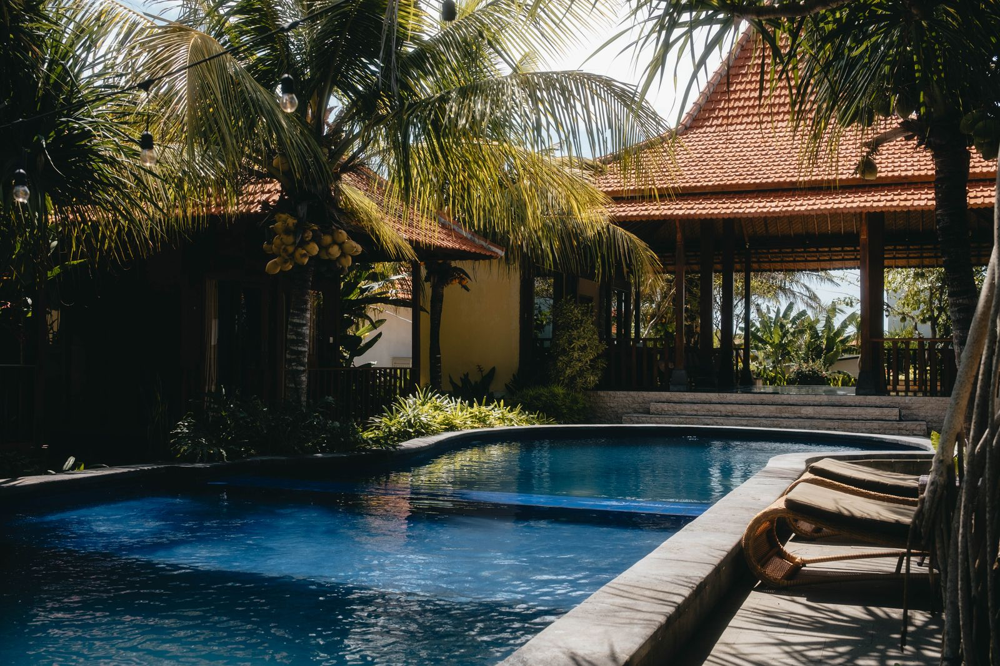

Awakened Touch — achtsame Tantramassage, Sinnlichkeit und Heilung in einem warmen, geschützten Raum inmitten von Ubud.
Awakened Touch — mindful tantra massage, sensuality and healing in a warm, protected space in the heart of Ubud.
Präsenz statt Ziel
Presence over goal
Lebensenergie spüren
Feeling life energy
Sanft & wertfrei
Gentle & judgment-free
Erlaubt & willkommen
Allowed & welcome
Awakened Touch ist eine Praxis für sakrale Körperarbeit in Ubud, Bali. Hier darfst du ankommen, loslassen und dich spüren — ohne Erwartung, ohne Leistung. Nur du, dein Atem und achtsame, liebevolle Berührung.
Awakened Touch is a practice for sacred bodywork in Ubud, Bali. Here you're invited to arrive, let go and feel yourself — without expectation, without performance. Just you, your breath and mindful, loving touch.
Ausgebildet in Bern, Schweiz, und zu Hause im Herzen Balis verbinde ich Struktur mit Hingabe — für einen Raum, der Sinnlichkeit, Genuss und Heilung gleichermassen Platz gibt.
Trained in Bern, Switzerland, and at home in the heart of Bali, I combine structure with devotion — for a space that welcomes sensuality, pleasure and healing in equal measure.
Mehr über michMore About Me
Acht Qualitäten, die jede Sitzung wie ein roter Faden begleiten.
Eight qualities that weave through every session.
Volle Präsenz im gegenwärtigen Moment.
Full presence in the here and now.
Raum für das, was sein darf.
Space for what wants to be.
Loslassen von Kontrolle.
Letting go of control.
Wiederverbindung mit dir selbst.
Reconnection with yourself.
Scham und altem Schmerz Raum geben.
Making space for shame & old pain.
Einfach da, um zu spüren.
Simply present to feel.
Teil eines grösseren, eigenen Weges.
Part of a larger, personal path.
Lebensenergie in ihrer Fülle.
Life energy in its fullness.
„Genuss ist keine Ablenkung vom Leben — er ist die Art, wie das Leben sich selbst spürt.“
“Pleasure is not a distraction from life — it is how life feels itself.”Awakened Touch — Ubud, Bali
Vier Formen der sakralen Körperarbeit — individuell auf dich abgestimmt.
Four forms of sacred bodywork — individually tailored to you.

Achtsame Berührung des gesamten Körpers zur Aktivierung deiner Lebensenergie.
Mindful touch of the whole body to awaken your life energy.

Heilsame, wertfreie Berührung im geschützten Rahmen für die weibliche Energie.
Healing, judgment-free touch in a protected space for feminine energy.

Balinesisch inspirierte Rituale für Übergänge, Segnung und Intention.
Balinese-inspired rituals for transitions, blessing and intention.

Schreib mir eine Nachricht — gemeinsam finden wir die passende Sitzung für dich.
Send me a message — together we will find the right session for you.
Jetzt Kontakt aufnehmenGet in Touch